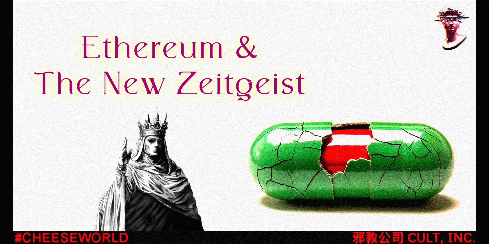
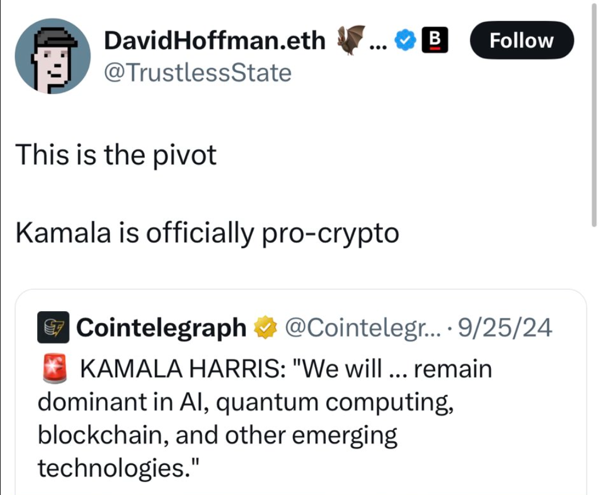
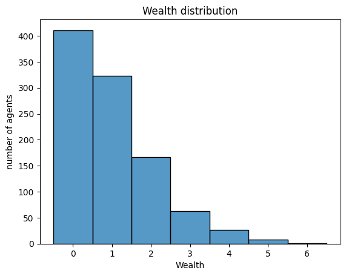
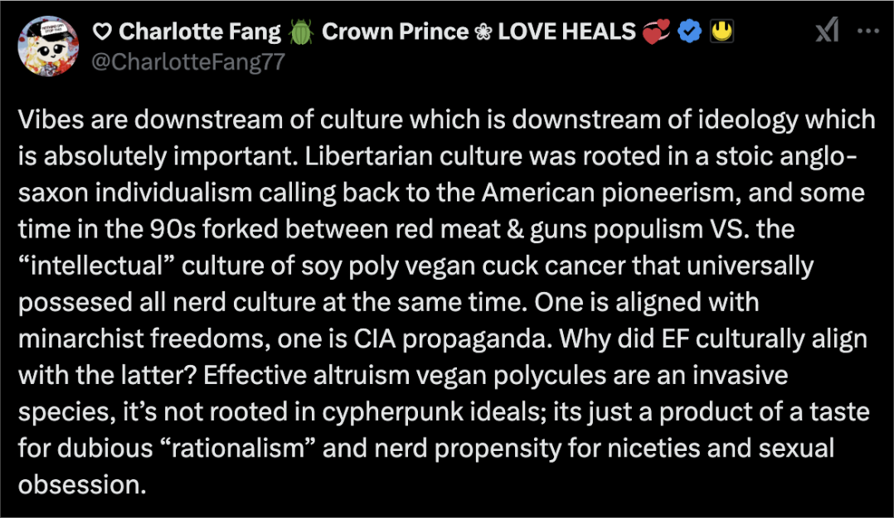

Ethereum & The New Zeitgeist
Originally published at https://paragraph.com/@0xjustice/ethereum-the-new-zeitgeist

Ethereum is experiencing a profound identity crisis partially instigated by the controversy surrounding the Ethereum Foundation (EF) and its executive leadership. A recurring theme in this controversy is the accusation that Ethereum culture is woke. As one commentator delicately put it:
“Ethereum indeed displays some signs of wokeness…” - @licuende
I’ll argue that these observations are understated and that the issue of wokeness within Ethereum culture is more pronounced than most will publicly acknowledge. Attempts to deflect this critique by claiming that Ethereum is apolitical are hard to substantiate after candid assessment.
This post will answer two key questions:
-
Would a newcomer perceive Ethereum as woke?
-
If so, does this perception pose a problem?
I’ll conclude with recommendations to mitigate the risks associated with this perceived cultural orientation.
My aim is not to critique individuals or evaluate their personal beliefs but to offer an observation and a cautionary note. The messaging and cultural emphasis that successfully defined Ethereum in one era will require substantial adaptation to remain effective in the next.
Some of the most prominent voices in Ethereum disavow cypherpunk values and endorse woke ideology.
Vitalik Buterin
Economic Philosophy
Vitalik publicly rejects Austrian Economics (AE), the intellectual foundation of cypherpunk values and doctrine. If central planning is rooted in Keynesian economics, decentralized economics are founded in Hayek. Hayek, a leading figure in AE, conceptualized markets as decentralized information systems capable of allocating resources more effectively than any central planner. He also pioneered ideas around competing privately issued currencies and challenged the monopoly of state-backed fiat money.
Vitalik’s dismissal of AE as a “foolish high school phase” is perplexing, given the close ties between its principles and the very foundations of Web3. One is left wondering about Vitalik's economic worldview. As we proceed, it will become clear that Vitalik appears to align with a flavor of crypto-washed Keynesianism and still believes in central planning as long as the correct people are doing it.
COVID Posture
Vitalik seemed to express nothing but endorsement for the COVID narrative and lockdowns. This was in contrast with voices arguing for protecting at-risk persons (elderly and sick) instead of blanket global lockdowns as a humanitarian alternative. His demeanor on this issue seemed out of character with what a newcomer would expect from crypto anti-authoritarianism.
In 2022, he listed total lockdowns as the optimum approach to viral outbreaks and quoted people who argued the same. Later that year, at Devcon 6, he wore a mask long after mandates ended and publicly encouraged people not to feel shy about doing the same. The final nail in the coffin was some tweets expressing relief about getting his third booster shot. This was a key point when the narrative of Vitalik as woke gained significant momentum.

https://x.com/charlottefang77/status/1880649634290569345?s=42
A.I. Moratorium
In January 2025, Vitalik called for a practical moratorium on AI development and described a technical strategy for policing it. His plan involved identifying the physical locations of AI chips, mandating their registration, and using integrated chips to conduct weekly authorization checks with the government.

People killed by AI: 0
People killed by the State: hundreds of millions
AI safetyists: Let's put AI under the control of the State
 4,881
4,88112:42 PM • Jan 25, 2025
](https://twitter.com/ErikVoorhees/status/1883224036882419746)
The strangest part is that this is presented under his vision for decentralization acceleration (d/acc). A new entrant to Ethereum may wonder if Vitalik hasn't lost the plot. It doesn't seem very decentralized or cypherpunk. The irony of such a proposal is that the clipper chip was one of the most visible battles fought by the cypherpunks. I’d expect people who claim the cypherpunk lineage to display a “come and take it” attitude.
Crypto Rebels, Wired Magazine, 1993
Community Sentiment
I’m not cherry-picking, and I'm not the only one highlighting this shift in Vitalik's ideological posture. I do not question his genius, but intelligence is a tool, not an end. If Vitalik's vision is woke, that has enormous ramifications for Ethereum culture.
“...Vitalik’s own spiritual orientation drifted ever further from semi-crypto-anarchist roots (as well as the burning rage of Blizzard nerfing his Warlock) and toward a sort of WEF-Kamalist mild crypto-apologism. What was left was a core Ethereum culture that lacked strategic diversity of thought and was allergic to business drive, competitive practicalities, and marketing efforts. Ethereum was increasingly alienated from the rest of cryptocurrency culture and market realities.” - Ethereum’s Repentance by @no__________end
Bankless
The Bankless podcast has been the promotional platform for Ethereum and provides significant value. However, its efforts during the 2024 election cycle conveyed a strong impression of attempting to sell Kamala Harris to its audience. It was a challenging endeavor, as the Harris campaign made only one policy statement related to crypto, and they used it to inject identity politics.
“She will make sure owners of and investors in digital assets benefit from a regulatory framework so that Black men and others who participate in this market are protected..” - Decrypt

The founders of Bankless appeared desperate to endorse Harris as a pro-crypto candidate, scrutinizing her every move for signals of alignment. This overt effort to portray her as a suitable choice was noticeable and came across as strained.

Bankless supported Kamala Harris and the Democratic Party. Let that sink in
10:27 AM • Nov 14, 2024
](https://twitter.com/Evan_ss6/status/1857098129784422416)
Around the same time, Vitalik published an article opposing supporting politicians based on their pro-crypto positions. This is an odd point to emphasize, given his status as one of the most vocal crypto proponents, particularly when other candidates were actively proposing a Bitcoin strategic reserve and positioning the United States as a global leader in crypto innovation.
The Inner Circle
Vitalik and Bankless seem woke after you strip away the tech, and this creates a cognitive dissonance that bleeds through their stated crypto values. Other Ethereum thought leaders are more transparent in repudiating cypherpunk values and endorsing woke ideas. Let's look at three top personal influences on Vitalik's worldview and Ethereum culture: Glen Weyl, Audrey Tang, and Aya Miyaguchi.
Glen Weyl
Glen Weyl has been lauded as a savior of Ethereum. In 2018, he had extensive personal correspondence with Vitalik, which is published online. Vitalik, in turn, seems to harbor reciprocal admiration for Weyl and his vision for humanity.
Weyl’s major book is “Radical Markets: Uprooting Capitalism and Democracy for a Just Society” and in it, he advocates abolishing capitalism and private property. It proposes “..a near-complete abolishment of private property in favor of a system in which property is mostly publicly owned and perpetually auctioned off; taxing the value of all property based on a self-assessment system.” - ProMarket
Weyl tweets things like “individualism and capitalism are the worst enemies of decentralization” and openly advocates Critical Race Theory (CRT) by “asking for questions from female or minority groups first…” after his talks. He floated the idea of penalizing SAT scores of people who use “standard white English” and suggested we should tax masculinity (whatever that means). See: Archive
Weyl’s coauthor, Eric Posner, ridicules Bitcoin, calls it a Ponzi scheme, and has predicted its collapse for over a decade. He rejects the value proposition of decentralized money when he says, “If central banks sometimes abuse the trust we place in them, the alternatives are worse.” See: Slate
One is right to ask what exactly connects Vitalik to Weyl besides leftist activism. Weyl himself says he sees “nothing transformative about Ethereum.”
Audrey Tang
Another name newcomers will repeatedly see arise from Ethereum’s inner circle is Audrey Tang. The first thing to catch one's attention might be the female name of what appears to be an Asian man. Since Tang comes up so frequently in Ethereum’s thought leaders, people might question if Tang is a blockchain researcher or evangelist. After casual research, they’ll discover that Tang is a transgender activist who led a left-wing student movement to overthrow Taiwan's parliament.
This led to the formation of the New Power Party (NPP), which focuses on reducing wealth inequality, growing welfare systems, and promoting LGBTQ causes. Tang is probably the most prominent voice of woke activism in Asia and is currently focused on “intersex and queer equality.” See: Watch Taiwan's Digital Minister on LGBTQ and Non-Binary Equality - Bloomberg
https://x.com/hitRECordJoe/status/1821144268850823520
I have no opinion on Tang's work and don't see its connection to crypto issues. I’m not here to judge their involvement with Ethereum, either. As most newcomers would, I’m simply observing that woke activists dominate Vitalik's inner circle. If that excites newcomers about Ethereum, that's great, but I’ll argue shortly that the opposite will happen in the coming years.
Note: The picture above shows Vitalik, Tang, and Weyl. The last person in this pic is actor-activist Joseph Gordon-Levitt, who (you can't make this up) is wearing a “White dudes for Harris” hat on his X profile.
Aya Miyaguchi
Aya Miyaguchi, the executive director of the Ethereum Foundation (EF), has become a central figure in the ongoing Ethereum culture wars. Much of the controversy stems from what many perceive as her anti-competition and anti-winning rhetoric.
“...I am trying to train more people to understand the reason why we do that and to be able to say ‘no’ to the culture of competing and winning. I try to pass on the Ethereum spirit, of our vision, collaboration, and community, as if I were a Zen teacher.” - Wired
Vitalik Buterin has pushed back against the backlash surrounding this Wired interview, arguing that her words were mistranslated. But that defense doesn’t hold water because Miyaguchi’s sentiment is not an isolated incident. At Devcon 7, instead of presenting a clear strategic vision for Ethereum’s future, she used a mandala to illustrate Ethereum governance. Rather than articulating Ethereum’s evolving strategy or ecosystem insights, the audience was met with Eastern mysticism and an abstract vision of governance defined by overlapping and indefinite boundaries.

The critical point to take away is that Miyaguchi is not assuming a posture foreign to EF leadership. Her anticompetitive demeanor is consistent with the touchy-feely presumed enlightenment assumed by social justice activists. She may be catching the brunt of the backlash from a community that wants a more competitive and assertive business strategy, but she's not an outlier from Ethereum culture.
A Collapsing Worldview
We’ve seen several prominent Ethereum thought leaders and their alignment with woke ideology. Now, we turn to the next question: Does this pose a problem? It does—for two key reasons:
1. Woke ideology is unraveling.
2. The world is moving right, and woke messaging will grow ineffective.
First, I’ll provide two examples illustrating the decline of woke ideology. Then, I’ll examine the broader cultural shift that underscores this trend.
Economic Equality
Economic equality is a phantom. Even simulating random exchange among undifferentiated agents still produces the scenario where a small fraction of the population holds a disproportionately large share of total wealth. See the Boltzmann Wealth Model.

https://mesa.readthedocs.io/stable/tutorials/intro_tutorial.html
Now, introduce extreme variability in abilities, knowledge, creativity, risk tolerance, and decision-making. Even in a perfectly fair environment, some individuals achieve significantly greater success than others. Over time, the compounding benefits of specific skills and talents lead to unequal outcomes, even when everyone starts from the same baseline. See Cumulative inequality theory.
Universal Basic Income (UBI) produced what common sense predicted it would. Giving consumerist low performers free money caused them to work less, not more. Wealth accrues to the most competent and ambitious actors, and those qualities are distributed unequally. Wealth redistribution under the guise of fairness only undermines natural incentive structures.
DEI
A second prominent tenant of woke ideology is the theory that unequal representation within groups is always the result of prejudice and discrimination. This theory and its prescribed solution of affirmative action baptize the very discrimination it’s supposedly intended to defeat, resulting in absurdity.
Individuals and people groups are different and are attracted to various things for various reasons. Attributing all disproportionate representation to prejudice displays an ignorance of human nature. There’s no room within cypherpunk values for this kind of anti-meritocratic philosophy. The point of sovereign money and anonymity is to support the free exchange and neutral evaluation of ideas irrespective of identity and physical characteristics.
The New Zeitgeist
The world has changed more than people realize. A proverbial Berlin wall of ideology is collapsing, and the Overton Window is in cataclysmic adjustment. Woke-coded messaging is losing credibility, and the people who initially found it compelling will diminish over time.
We’ve entered a new zeitgeist. The ideas of UBI, DEI, CRT, Malthusianism, and conservationism will be viewed as relics within the decade. We’re experiencing the collapse of social liberalism and the beginning of a monarchal gestalt. Big tech knows this and, whether it's genuine or not, is pivoting to free speech, free markets, and meritocracy.
Coinbase was among the first to exclude social justice from its work culture. X, under Elon, positioned itself as the world's free speech platform. Bezos read the tea leaves and did the same by instructing his newspaper, The Washington Post, to follow suit. Same with the LA Times. Meta, under Zuck, fired its content moderation army and has publicly committed to free speech.
DEI offices are closing everywhere (Walmart, McDonald’s, Target, Ford, Harley-Davidson, etc), and diversity quota laws are being overturned. Milei is roasting the WEF to their faces with his wildly successful application of Austrian Economics. The wind change is undeniable, and the ramifications have just begun. Nozick has defeated Rawls.
Based Ethereum
In response to the culture wars, Vitalik has said there will be changes, but that a “vibez pivot from feminized wef soyboy mentality to bronze age mindest” won't be one of them. I’m not convinced superficial tweaks will satisfy the rumblings of discontent. Vitalik can change a roadmap, but core values don't change easily. Ethereum must reorient its messaging and ethos around people who exemplify the original vision of the cypherpunks.
Based Leadership
Names like Erik Voorhees and Ameen Soleimani immediately come to mind when I think of leaders who exemplify defiant free market ideas that could course-correct Ethereum culture.
Voorhees embodies the libertarian ethos Ethereum needs, and he does so to tremendous fanfare. He gave away Rothbard's Anatomy of the State for Christmas to his followers on X, and his Permissionless talk demonstrated the communities' desire to return to core values.
It’s a stark contrast with Miyaguchi’s mandala vision and should be noted. He emphasizes freedom and autonomy and conjured revolution energy without redistributive activism or social justice. His talk took the community by storm.
Ameen represents a brash yet cunning builder who exemplifies the cypherpunk ethos. He created the only DAO stack (Moloch) that protects individuals and, more recently, privacy pools enabling privacy while simultaneously proving the exclusion of state-level sanctioned actors.
I’m sure there are many more cypherpunks in the Ethereum community, but those voices get overridden by collectivist-minded personalities.
Based Messaging
Ethereum already has a message suitable to the new zeitgeist. It just needs to be internalized and vocalized to and through the community. It is easily summarized under three priorities: Autonomous code, Impenetrable Privacy, and Unrestricted Tokenomics.
Autonomous Code
Decentralized apps should be unstoppable and easy to deploy. They are neither. Decentralized fronts-ends are still clunky to deploy and web3 apps unilaterally delist assets and transfer account ownership at the request of a corporate email. This priority is also aligned with the current AI renaissance. Neutrality will never be achieved at the social layer. It's only through autonomous and unstoppable code.
Impenetrable Privacy
The greatest threat to autonomous code are attacks against builders. Just ask Roman Storm. This is why we need privacy. Crypto historians have highlighted how today's emphasis on institutional “digital assets” evolved because crypto launched without optional privacy.
“Blockchains need privacy in the same way that the internet needed encryption before it could realize its economic potential… Protocols like Bitcoin and Ethereum have pioneered the digital asset space. But the world of Web 3.0 is still awaiting its ‘Netscape moment.’” - Cryptocurrency Won’t Work Without Privacy | Forbes
ZK developments may be the unlock, but for now, the heavy use of KYC and regional geo-blocking are not cypherpunk. The goal should be to undermine, not accommodate, these patterns.
Unrestricted Tokenomics
Our crypto mechanisms are unnecessarily complex and ineffective because they're trying to comply with securities laws. If we had genuinely unstoppable code and privacy, these rules could be ignored. Protocols could pay dividends and DAOs could be DACs.
“Just as the technology of printing altered and reduced the power of medieval guilds and the social power structure, so too will cryptologic methods fundamentally alter the nature of corporations and of government interference in economic transactions." - The Crypto Anarchist Manifesto, 1988
Conclusion
Culture matters. It’s supremely practical. Culture informally determines what is sacred and sacrosanct. I still vividly remember the looks I received in my first DAO grants committee meeting when I said projects should be partially evaluated based on their business models. Or years later, when I suggested web3 protocols should draw from established platform strategy playbooks. These suggestions drew raised eyebrows and a few grimaces. Didn’t I know that web3 protocols, particularly Ethereum, were post-capitalist immaculate conceptions incomparable to anything else in history?
“If you are an aspiring Ethereum wunderkind, your dream is to be acknowledged by Vitalik. To do so, you mimic the culture and ethos that you see from Vitalik and those in his entourage. You must reject Silicon Valley capitalism. You have deep faith that every problem is a technical problem…The greatest act that a startup can achieve is to seppuku and rise again as a Public Good. VCs, Evil. Speculation-driven early crypto use cases (99%+ of the ecosystem)… disgusting!” - Ethereum’s Repentance by @no__________end
In the same article in which Vitalik warns of voting for politicians because of their pro-crypto stance, he makes the following statement:
“A popular recent strategy to try to protect domestic workers is tariffs; but even when tariffs succeed at achieving that goal, unfortunately, they often do so at the expense of workers in other countries.” - Against choosing your political allegiances based on who is "pro-crypto"
This point is intimately related to Miyaguchi’s anti-competition quotes and criticisms that Ethereum is anti-winning. Imagine for a moment that each chain is a kind of digital nation. It's a remarkable parallel that illustrates his values and philosophy. He is saying it's undesirable to do things that enrich your citizenship if they don't enrich outsiders (other nations).
In the new zeitgeist, people want leaders who put them first, whether nations or protocols. That's their job. The MEGA mantra of “Make Ethereum Great Again” is more than a coincidence of acronyms. It’s a profound revelation of changing perspectives. The Ethereum community wants an EF that's for their winning.
There's a massive catch-22 to all this. Either Vitalik and the EF listen to the calls for new leadership, or they undermine their supposed support for democracy, egalitarianism, and decentralization.
“The person deciding the new EF leadership team is me.” - Vitalik X Post
I love the Ethereum ecosystem. It’s the only real community I’ve known in Web3, but it's been undeniably twisted from its cypherpunk origins. This worked for a while because it matched a supporting contemporary ethos. But that coincidence of vibes is gone. If people don't see it yet and think I’m crazy, they’ll see it over the next year. It’ll take much more than a PFP change and vibes shift to get future generations of builders and evangelists cult-pilled on Ethereum. We need a spiritual return to the roots of crypto.

https://x.com/CharlotteFang77/status/1880646932605145117
Originally published on 0xJustice.eth